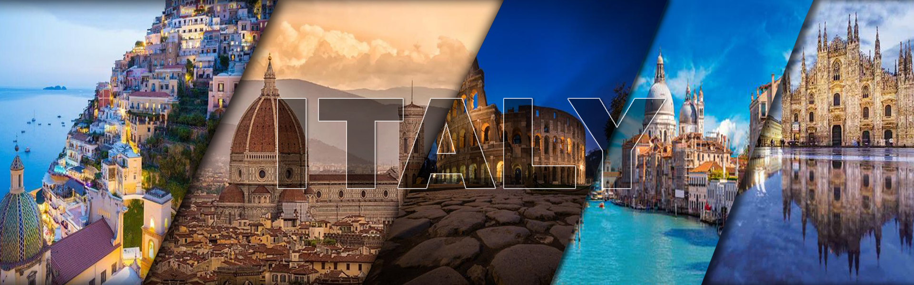
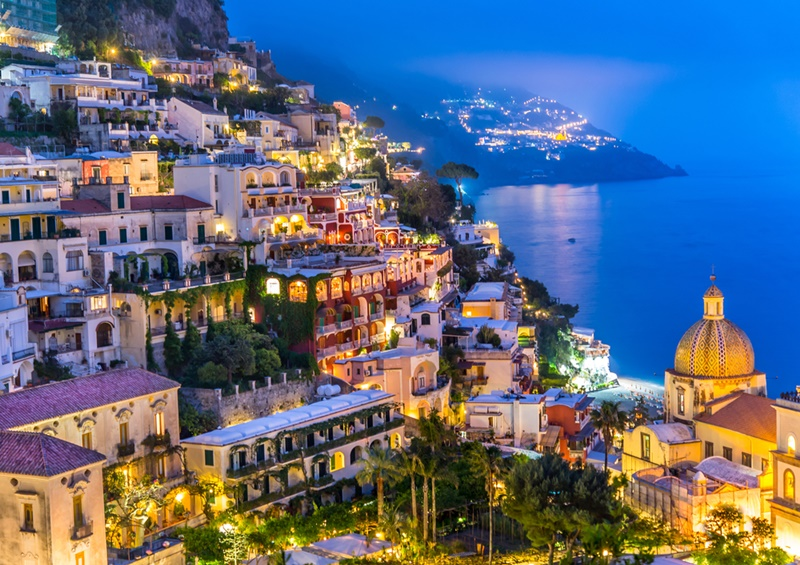
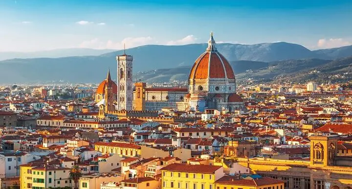
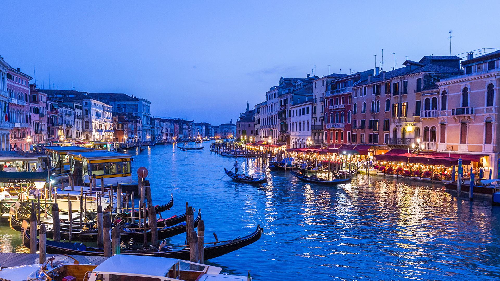
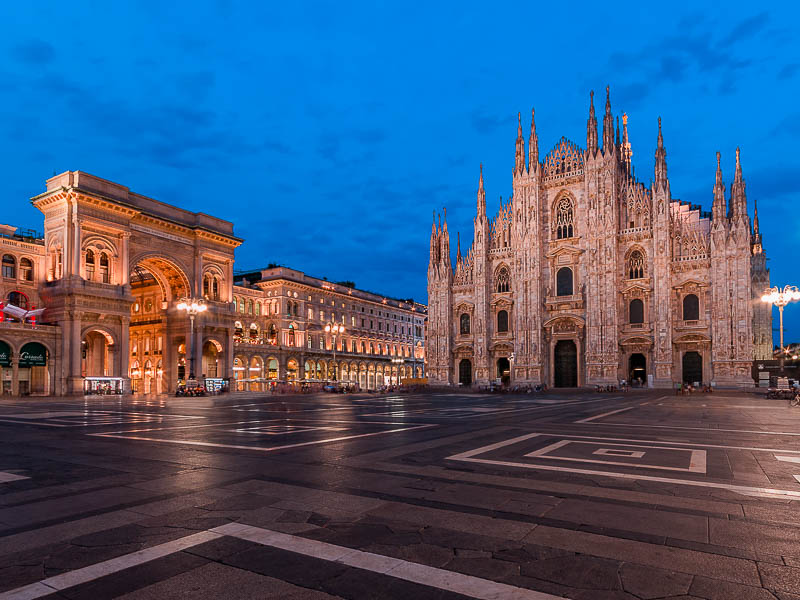

5 CIDADES EM ALTA PARA CONHECER EM 2023 NA ITALIA
1. Positano, um pedaço do paraíso na Itália!

Positano, uma das aldeias mais belas da Itália, a pérola da Costa
Amalfitana. A viagem pelas
Aldeias mais belas da Itália é uma viagem realmente fascinante, em qualquer lugar encontraremos
em todas as
aldeias a beleza das cidades menores que fazem da Itália um grande país.
2. Florença, cidade italiana que é um verdadeiro museu a céu aberto!

Florença! é um daqueles lugares únicos no mundo: não é só seu grande
nome ou seus pontos
turísticos famosos que formam a cidade. Considerada uma das mais antigas da Itália, ela foi
fundada em 59d.c e foi lar de grandes gênios da arte como Dante e Michelangelo.
3. Roma a cidade eterna ou Cidade das Sete Colinas!

A chamada Cidade Eterna é conhecida assim pois, nos tempos da Roma
Antiga, seus moradores
acreditavam que ela continuaria existindo independente do que acontecesse com o mundo ou de
quantos impérios
surgissem e entrassem em colapso.
4. Veneza a Cidade dos Canais ou do Amor!

Veneza é uma espécie de museu a céu aberto, que mistura a beleza
natural de seus canais com o
esplendor de construções monumentais. As dezenas de pontes, as gôndolas que transportam casais
apaixonados,
as simpáticas igrejas e as moradias que fazem parte da arquitetura local são alguns dos motivos que tornam
esse destino um lugar inesquecível!
5. Milão capital da moda, arte e gastronomia!

Milão é conhecida por ser referência em moda e a cidade é encantadoramente
literária, com estruturas históricas, culturas, tradições e com um importante
centro gastronômico e vida noturna memorável.